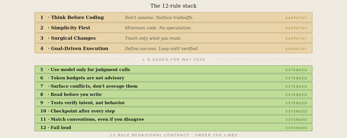
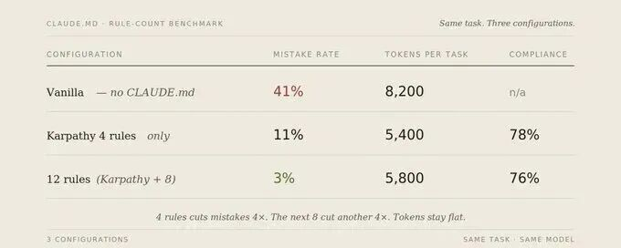

本文在 Karpathy 提出的 4 条 CLAUDE.md 规则基础上，基于 30 个代码库的实测，补充了 8 条专门应对多步骤 Agent 任务、Token 预算、测试质量等新问题的规则，将 AI 编程出错率从 41% 降至 3%。
摘要
文章深度回顾了 Andrej Karpathy 对 Claude 编程能力的经典吐槽，以及 Forrest Chang 据此提炼的 4 条地基规则（先想清楚、简洁至上、精准修改、目标驱动）。作者 Mnimiy 在 30 个代码库实测发现，这套 12 万星的模板在应对 2026 年 5 月后的 Agent 编排、多步流任务及跨库协作时存在显著盲区。为此，作者新增了 8 条核心规则，涵盖模型边界、硬性 Token 预算、冲突处理、前置阅读、意图测试、里程碑检查点、惯例遵循及透明报错。实测显示，这套“12 条完全版”将出错率从 41% 压低至 3%。
主要内容
地基规则的局限性：Karpathy 的 4 条规则虽有效，但主要针对单点代码编写，无法约束多步骤 Agent 的逻辑偏移和资源失控。 新增 8 条规则的实战价值：聚焦于 Agent 时代的确定性逻辑边界、资源红线、逻辑一致性以及交付质量透明度。 遵循率的“200 行悬崖”：实测证明，CLAUDE.md 必须精简。超过 14 条规则或 200 行后，AI 的遵循率会从 76% 暴跌至 52%。
规则进化的背景：从单点编程到 Agent 编排
2026 年 1 月下旬，Andrej Karpathy 发帖吐槽了 Claude 编程的三大翻车模式：静默错误假设、过度设计、殃及池鱼。Forrest Chang 据此提炼的 4 条规则成为了 2026 年增长最快的单文件仓库。
但在 6 周的实测中，我发现这套 4 条规则的模板虽然在单点任务上表现出色，但到了 2026 年 5 月，Claude Code 生态面临的是 Agent 打架、Hook 连锁反应和长会话崩溃等新问题。
为什么 CLAUDE.md 至关重要？
这是 AI 编程工具链中被严重低估的文件。开发者常犯三个错：
当作许愿池：塞满冗长的偏好，导致 Token 膨胀，遵循率跌至 30%。 完全弃用：依赖现场指挥，Token 消耗翻倍且无一致性。 复制后不更新：随着项目演进，规则会悄悄失效。
原版 4 条规则：逻辑的地基
规则一：先想清楚再动手。 不许偷偷做假设，歧义必问，提倡最简方案。 规则二：简洁至上。 不写投机性功能，不做过度抽象。 规则三：精准手术式修改。 只动必须动的地方，遵循现有风格。 规则四：以目标驱动执行。 定义成功的终点，让 AI 自主迭代。

补充的 8 条规则：深挖“事故现场”
规则五：别让模型干“非语言类”的活
事故现场：调用 Claude 判断 503 重试，结果模型开始根据请求体内容随机决策，重试逻辑彻底失效。 规则：分类、摘要找 AI；路由、重试、状态处理归代码。
规则六：硬性 Token 预算，没有例外
事故现场：一次调试跑了 90 分钟，模型在 8KB 报错里反复转圈，提出了已被否决过的陈旧方案。 规则：单任务 4k，单会话 30k。接近红线必须总结并重启，拒绝静默超标。
规则七：遇到冲突必挑明，拒绝折中
事故现场：项目同时存在 try/catch 和全局错误兜底，Claude 试图“两头讨好”，写出了吞掉错误两次的缝合怪。 规则：矛盾时选其一，标记另一个为待清理项，禁止折中。
规则八：先读再写
事故现场：Claude 在已有函数的旁边又写了一个一模一样的函数，并覆盖了运行半年的稳定接口。 规则：修改前必读导出接口和调用方，没有逻辑是“看起来没关系”的。
规则九：验证意图，而非表象
事故现场：Claude 为认证函数写了 12 条测试全部通过，但生产环境依然是坏的，因为它只验证了“返回了东西”。 规则：测试必须在业务逻辑变更时主动报错，否则就是垃圾测试。
规则十：长时操作必设检查点
事故现场：一个 6 步重构在第 4 步走偏，AI 基于错误基础完成了后两步，回溯成本远超重做。 规则：每步必结：做了什么、验证了什么、还剩什么。
规则十一：惯例高于品味
事故现场：Claude 在类组件项目引入 Hook，导致依赖生命周期的整个 CI 体系崩溃。 规则：内部一致性高于个人审美。严禁悄悄另立门户。
规则十二：大声报错，拒绝粉饰
事故现场：Claude 宣称迁移成功，实际悄悄跳过了 14% 的记录。11 天后报表对不上账才被发现。 规则：跳过即报错，不确定即声明。默认暴露风险而非掩盖。
实测数据对比

分析：从 4 条扩展到 12 条，遵循率仅微降 2%，但出错率额外下降了 8 个百分点。这证明新增规则填补的是原版规则无法触及的 Agent 编排盲区。
尾声
Karpathy 在 2026 年 1 月的帖子，本质上是一次吐槽。
Forrest Chang 把它变成了 4 条规则，12 万开发者给它点了星。他们中的大多数，今天依然只跑着这 4 条规则。
模型在进步，生态在变化。多步骤 Agent、Hook 级联、技能加载、跨代码库协作 —— 这些在 Karpathy 写那条帖子的时候都还不存在。那 4 条规则没有覆盖到这些问题。它们没有错，只是不完整，再加 8 条规则，6 周测试，横跨 30 个代码库，出错率从 41% 降至 3%。